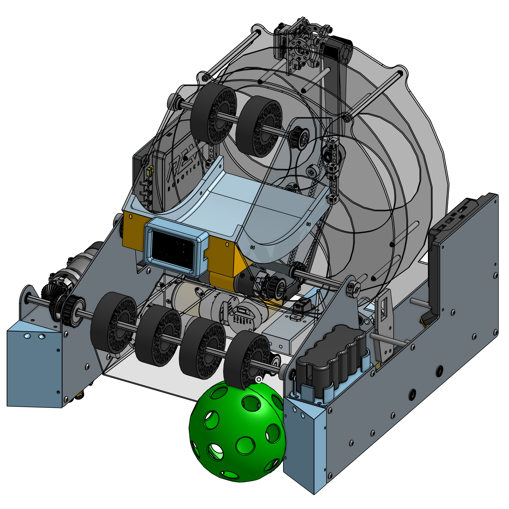

Student & Engineer. Open-source enthusiast.
I'm a first-year Engineering student at the University of Washington and a robotics designer & programmer based in Seattle.
Selected Projects
NextFTC
NextFTC is a software library that I've written & maintained since 2022. It aims to improve the development process for programming FIRST® Tech Challenge robots by introducing an asynchronous system known as Commands.
NextFTC has been successfully used at all levels of competition including at the World Championship, and is currently used by over 90 teams across at least 9 countries. My role as the founder of NextFTC has changed over time, shifting from the sole developer to a managerial position, coordinating multiple other developers and contributors.
FIRST Tech Challenge
I competed on FIRST Tech Challenge (FTC) team 3805 Atomic Robotics for 5 years, from 8th grade until I graduated high school. I was appointed Software Lead in 9th grade, a position I held for the rest of my time on the team. Additionally, I was elected Vice Captain in my sophomore year and promoted to Captain in my Junior year of high school.
While on the team, I revolutionized our software by incorporating NextFTC into our code. Further, I transformed our design process to begin with a full robot CAD (Computer Aided Design) prior to assembly. That significantly reduced our assembly time, and resulted in less unexpected issues with our robot.
In my time on the team, we earned 9 awards and won 10 competitions. In my most recent season, I led the team to 3 event wins and won the Control Award, which is an award that celebrates the team's software control and sensor usage.

FIRST Robotics Competition
In my last 2 years of high school, I competed on FIRST Robotics Competition (FRC) team 1778 Chill Out, based out of Mountlake Terrace High School. In my first year on the team, I was on the programming and manufacturing subteams. In my senior year, I was elected Vice President and led the programming and electrical subteams, as well as leading aspects of the CAD and prototyping teams.
Our team had an incredibly successful season in my junior year, winning 2 competitions and advancing to the World Championship in Houston, Texas, where we ended the season ranked 16th worldwide out of around 3700 teams. Our following year was a challenge towards the beginning, because we had a major shift of membership as our seniors graduated, which resulted in knowledge gaps we had to work to overcome. I led the team through those struggles, and our season was the 4th-best season our team has had in our 20-year history.
West Coast Invitational
In February of 2024, I founded the West Coast Invitational, an offseason FIRST Tech Challenge competition. I've structured the event in such a way to guarantee long-term success, with the goal of enabling the event to outlast my involvement. I am currently the longest-running member of the Executive Board, and currently oversee and work with 15 members of the Planning Board to manage all logistics (including finances, volunteer coordination, and team enjoyment) of the competition.
West Coast Invitational is the longest-running offseason FTC offseason competition in Washington State, and has hosted teams from multiple states and countries. Future plans include expanding the event to allow space for more teams, as well as internally structuring the Executive and Planning Board to incorporate as an officially registered non-profit organization.